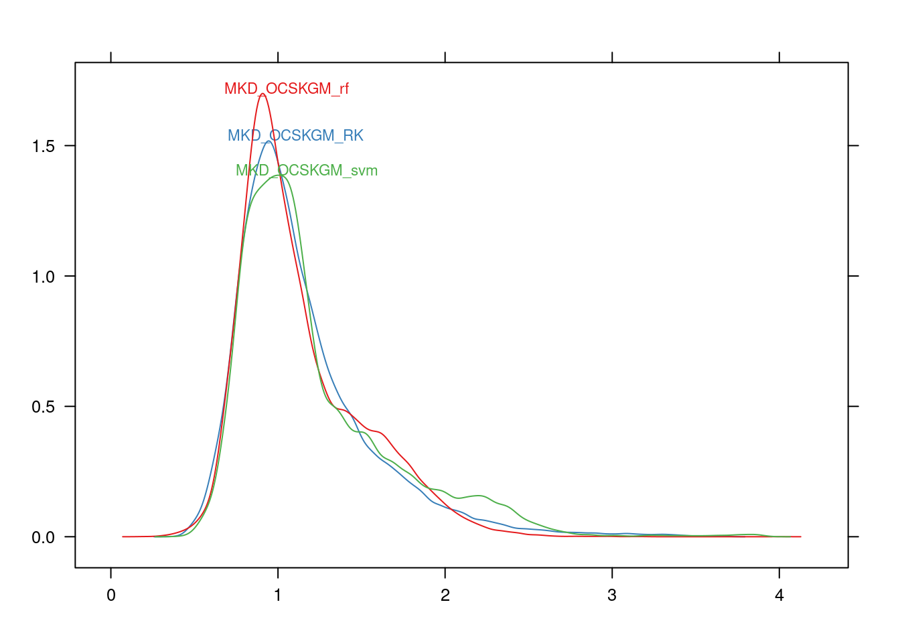

Chapter 8 Model Evaluation in Digital Soil Mapping
M Guevara & GF Olmedo
There are no best methods for statistical modeling and different evaluation strategies should be considered in order to identify, realistically, the overall modeling accuracy (Ho and Pepyne (2002); Qiao, Soberón, and Peterson (2015); Guevara et al. (2018); Nussbaum et al. (2018)). This section is devoted to describe quantitative methods for model evaluation applied to SOC mapping across FYROM. Our objective is to provide a model evaluation example based on a vector of observed SOC and a vector of modeled SOC estimates derived from three different statistical methods (multiple linear regression-kriging RK (Sect.6.2) random forests RF (Sect.6.3), and support vector machines SVM (Sect.6.4)). The model evaluation methods presented here were adapted from the original work of Carslaw & Ropkins for air quality assessments and its R package openair (Carslaw and Ropkins 2012).
We found in this package a very useful set of functions for model evaluation metrics that are suitable (and we highly recommend) for comparing digital soil maps derived from different prediction algorithms. We will first analyze the simple correlation and major differences of generated SOC maps by the three different methods. Then for further analysis we will prepare a data frame containing the observed and modeled vectors as well as the method column. Ideally the observed vector should be derived from a completely independent SOC dataset, as explained in the previous chapter. The cross validation strategy and the repeated random split for training and testing the models are other two alrernatives when no independent dataset is available for validation purposes. However, we do not recommend to use the same training dataset for performing the following analysis, since the resulting ‘best method’ could be the one that overfits the most.
8.1 Technical steps - Model correlations and spatial differences
We will import the predicted maps and harmonize them in to the same regular grid (~1x1km of spatial resolution). Then we will plot the statistical distribution and the correlation between the three different methods (RK, RF, SVM).
library(raster)
RF<-raster('results/MKD_OCSKGM_rf.tif')
RK<-raster('results/MKD_OCSKGM_RK.tif')
SVM<-raster('results/MKD_OCSKGM_svm.tif')
#Note that RK has a different reference system
RK <- projectRaster(RK, SVM)
models <- stack(RK, RF, SVM)
library(psych)
pairs.panels(na.omit(as.data.frame(models)),
method = "pearson", # correlation method
hist.col = "#00AFBB",
density = TRUE, # show density plots
ellipses = TRUE # show correlation ellipses
)  Here we found that the higher correlation between predicted values was between RK and SVM (0.86). We also found that the statistical distribution of predicted values is quite similar between the three methods and that the lowest correlation of predictions was found between the two machine learning approaches (0.79, RF and SVM). We can in addition overlap the probability distribution functions for the three different methods to verify that their predictions are similar across the full data distribution of values.
Here we found that the higher correlation between predicted values was between RK and SVM (0.86). We also found that the statistical distribution of predicted values is quite similar between the three methods and that the lowest correlation of predictions was found between the two machine learning approaches (0.79, RF and SVM). We can in addition overlap the probability distribution functions for the three different methods to verify that their predictions are similar across the full data distribution of values.
 Lets now take a look at the spatial differences. This step will allow to identify the geographical areas within the prediction domain where model predictions more agreee and disagree. To spatially compare model predictions we will estimate the standard deviation and the differences between the three SOC maps.
The mapview command will plot the standard deviation map in a .html file. Note roughly how the hotspots (yellow to red colors) of higher variance of predictions tend to be higher towards the west of the country, whereas models tend to agree in their predictions across the east side of the country. Note also that the variability although noisy, it shows a general pattern, (e.g., from east to west), suggesting that model agreement could be associated with specific land surface characteristics. Now we will analyze specific differences between the three models (RK vs RF, RK vs SVM, RF vs SVM).
RKRF <- calc(models[[c(1,2)]], diff)
RKSVM <- calc(models[[c(1,3)]], diff)
RFSVM <- calc(models[[c(2,3)]], diff)
preds <- stack(RKRF, RKSVM, RFSVM)
names(preds) <- c('RKvsRF','RKvsSVM','RFvsSVM')
X <- cellStats(preds, mean)
levelplot(preds - X, at=seq(-0.5,0.5, length.out=10), par.settings = RdBuTheme) Note how the spatial differences of the predicted SOC values have similar patterns, but the difference between RK and RF semms to be less sharp than the differences of SVM with the other two methods. Note that we use the levelplot function to generate a better visualization (from red-to-white-to-blue) of the main effects of differences (e.g., if they are positive or negative), but we could also use the mapview function to analyze these maps in a more interactive fashion. The variance of predictions derived from different models can be used as a proxy of model uncertainty and provides valuable information to consider in further applications of SOC maps (e.g., modeling crop production or quantifying SOC stocks).
Note how the spatial differences of the predicted SOC values have similar patterns, but the difference between RK and RF semms to be less sharp than the differences of SVM with the other two methods. Note that we use the levelplot function to generate a better visualization (from red-to-white-to-blue) of the main effects of differences (e.g., if they are positive or negative), but we could also use the mapview function to analyze these maps in a more interactive fashion. The variance of predictions derived from different models can be used as a proxy of model uncertainty and provides valuable information to consider in further applications of SOC maps (e.g., modeling crop production or quantifying SOC stocks).
8.2 Technical steps - Model evaluation
To compare the performance of the three models, we will compare the observed values used and the predicted values for the the validation points. We have to load the validation dataset and the prediction result of the 3 models. The table containing these values was prepared in Section 7.5.
We will prepare a new table from this data that we are going to use for model evaluation purposes. The new table should have the observed value, the predicted value and the model.
# prepare 3 new data.frame with the observed, predicted and the model
modRK <- data.frame(obs = dat$OCSKGM, mod = dat$MKD_OCSKGM_RK,
model = "RK")
modRF <- data.frame(obs = dat$OCSKGM, mod = dat$MKD_OCSKGM_rf,
model = "RF")
modSVM <- data.frame(obs = dat$OCSKGM, mod = dat$MKD_OCSKGM_svm,
model = "SVM")
# merge the 3 data.frames into one
modData <- rbind(modRK, modRF, modSVM)
summary(modData)## obs mod model
## Min. :0.0111 Min. :0.2980 RK :970
## 1st Qu.:0.6681 1st Qu.:0.8196 RF :970
## Median :0.9518 Median :0.9589 SVM:970
## Mean :1.1076 Mean :1.0422
## 3rd Qu.:1.3744 3rd Qu.:1.1507
## Max. :6.1827 Max. :3.3768
## NA's :34Now we will use the modStats function to calculate common numerical model evaluation statistics which are described and mathematically defined in the openair manual (Carslaw (2015), Ch. 27, pp 231-233). These include:
- \(n\), the number of complete pairs of data.
- \(FAC2\), fraction of predictions within a factor of two.
- \(MB\), the mean bias.
- \(MGE\), the mean gross error.
- \(NMB\), the normalized mean bias.
- \(NMGE\), the normalized mean gross error.
- \(RMSE\), the root mean squared error.
- \(r\), the Pearson correlation coefficient.
- \(COE\), the Coefficient of Efficiency based on Legates and McCabe (1999), Legates and McCabe (2013). A perfect model has a \(COE\) = 1. A value of \(COE\) = 0.0 or negative implies no prediction capacity.
- \(IOA\), the Index of Agreement based on Willmott, Robeson, and Matsuura (2012), which spans between -1 and 1 with values approaching +1 representing better model performance.
A perfect model would have a \(FAC24\), \(r\), \(COE\) and \(IOA\) ~ 1.0, while all the others ~ 0. However, digital soil mappers should have in mind that there is no such thing as a perfect model on digital SOC mapping for large areas, especially if we deal with sparse data from legacy soil profile or pit observations usually collected over long periods of time. Depending on the situation, some performance measures might be more appropriate than others. Hence, there is not a single best measure, and it is necessary to use a combination of the performance measures (Chang and Hanna 2004).
#Load the openair library
library(openair)
modsts <- modStats(modData,obs = "obs", mod = "mod", type = "model")| model | FAC2 | MB | MGE | NMB | NMGE | RMSE | r | COE | IOA |
|---|---|---|---|---|---|---|---|---|---|
| RK | 0.89 | -0.08 | 0.36 | -0.07 | 0.32 | 0.54 | 0.63 | 0.25 | 0.63 |
| RF | 0.88 | -0.08 | 0.37 | -0.07 | 0.33 | 0.56 | 0.59 | 0.23 | 0.62 |
| SVM | 0.86 | -0.03 | 0.39 | -0.02 | 0.36 | 0.58 | 0.53 | 0.18 | 0.59 |
From our SOC mapping example across FYROM, the three models generate similar results. The FAC2 is close to 0.8 in all cases, being RK the one closer to 1. MB and NMB suggest that all the model’s tent to underestimate SOC because they are negative. SVM tend to underestimate less than RK and RF. The MGE, NMGE, and RMSE suggest however that SVM is generating the larger error rate and by the values of r COE and IOA, we could say that given available SOC data across FYROM, the RK method improves the predictive capacity of RF and SVM.
The aforementioned conclusion can be verified by plotting a Taylor Diagram (Fig. 8.1), which summarizes multiple aspects of model performance, such as the agreement and variance between observed and predicted values (Taylor 2001). Recent reports show that the integration of simple validation metrics (e.g., the rmse correlation ratio) allows to extract information about modeling performance that could not be obtained by analyzing the validation metrics independently, such as the agreement between explained variance and bias (Guevara et al. (2018); Nussbaum et al. (2018)). Taylor Diagrams interpteration rely on the relationships between explained variance and bias (from observed and modeled data). Note from our Taylor Diagram that the RK method is closer to the observed value, followed by RF. Although, no significant difference was evident between the model of the three implemented algorithms.
TaylorDiagram(modData, obs = "obs", mod = "mod", group = "model",
cols = c("orange", "red","blue"), cor.col='brown',rms.col='black')Figure 8.1: Taylor diagram used in the evaluation of the 3 digital soil mapping models
However, we need to check that the effectiveness of RK remains across all the full distribution of SOC observed values. For doing this, we can plot the conditional quantiles to verify the higher prediction capacity of RK (Fig. 8.2).

Figure 8.2: Effectiveness of the different digital soil mapping models across the full distribution of SOC observed values
The blue line shows the results for a perfect model. In this case, the observations cover a range from 0 to 6 kg.m-2. Interestingly, the maximum predicted value is in all cases less than 3 kg.m-2, which is consistent with the MB and NMB previous results. Note that the median of predictions across the larger SOC values seems to have more variability across SVM and RK compared with RF, which could generate less biased predictions across SOC values >2.0 kg.m-2. The red line shows the median value of the predictions. The shading shows the predicted quantile intervals (i.e. the 25/75th and the10/90th). A perfect model would lie on the blue line and have a very narrow spread and the histograms show the counts of observed (gray) and predicted values (blue).
We conclude, for this specific example, that RK showed the best performance based on the implemented evaluation metrics. Therefore RK is a suitable method predicting SOC values across Macedonia, altohugh our results show a large scattered variance of higher SOC predicted values (after the third quantile quantile of the data range) compared with the observed vector. While RF shows more conservative results across the higher SOC values (e.g., fourth quantile), SVM had the lowest model performance based these metrics. SVM was also the method showing higher spatail differences compared with RF and RK.
Finally, we want to highlight that Integrating different statistical methods and visualization tools, such as those provided by the openair package of R (Carslaw and Ropkins 2012) will enhance our capacity to identify the best modeling approaches and a combination of SOC prediction factors given a specific dataset. Model evaluation benefits our understanding of the circumstances why each modeling approach will generate different results, which is a first step towards reducing the uncertainty of model performance while increasing the spatial resolution of predictions, the eternal digital soil mapping problem.
References
Ho, Yu-Chi, and David L Pepyne. 2002. “Simple Explanation of the No-Free-Lunch Theorem and Its Implications.” Journal of Optimization Theory and Applications 115 (3). Springer:549–70.
Qiao, Huijie, Jorge Soberón, and Andrew Townsend Peterson. 2015. “No Silver Bullets in Correlative Ecological Niche Modelling: Insights from Testing Among Many Potential Algorithms for Niche Estimation.” Methods in Ecology and Evolution 6 (10). Wiley Online Library:1126–36.
Guevara, M., G. F. Olmedo, E. Stell, Y. Yigini, Y. Aguilar Duarte, C. Arellano Hernández, G. E. Arévalo, et al. 2018. “No Silver Bullet for Digital Soil Mapping: Country-Specific Soil Organic Carbon Estimates Across Latin America.” SOIL Discussions 2018:1–20. https://doi.org/10.5194/soil-2017-40.
Nussbaum, Madlene, Kay Spiess, Andri Baltensweiler, Urs Grob, Armin Keller, Lucie Greiner, Michael E Schaepman, and Andreas Papritz. 2018. “Evaluation of Digital Soil Mapping Approaches with Large Sets of Environmental Covariates.” Soil 4 (1). Copernicus GmbH:1.
Carslaw, David C., and Karl Ropkins. 2012. “Openair — an R Package for Air Quality Data Analysis.” Environmental Modelling & Software 27–28 (0):52–61. https://doi.org/10.1016/j.envsoft.2011.09.008.
Carslaw, DC. 2015. “The Openair Manual–Open-Source Tools for Analysing Air Pollution Data. Manual for Version 1.1–4, King’s College London.”
Legates, David R, and Gregory J McCabe. 1999. “Evaluating the Use of ‘Goodness-of-Fit’ Measures in Hydrologic and Hydroclimatic Model Validation.” Water Resources Research 35 (1). Wiley Online Library:233–41.
Legates, David R, and Gregory J McCabe. 2013. “A Refined Index of Model Performance: A Rejoinder.” International Journal of Climatology 33 (4). Wiley Online Library:1053–6.
Willmott, Cort J, Scott M Robeson, and Kenji Matsuura. 2012. “A Refined Index of Model Performance.” International Journal of Climatology 32 (13). Wiley Online Library:2088–94.
Chang, JC, and SR Hanna. 2004. “Air Quality Model Performance Evaluation.” Meteorology and Atmospheric Physics 87 (1-3). Springer:167–96.
Taylor, Karl E. 2001. “Summarizing Multiple Aspects of Model Performance in a Single Diagram.” Journal of Geophysical Research: Atmospheres 106 (D7). Wiley Online Library:7183–92.